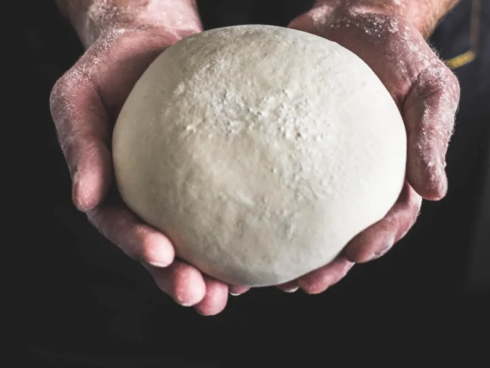

So you want Michelin Star Pizza Dough? Well, you're in luck!
Here's the recipe:
Ingredients:
- 250 grams (2 cups) all-purpose flour, plus more for dusting
- 110 grams (1/2 cup) warm water
- 1.25 grams (1/2 teaspoon) dry yeast
- 1 tablespoon kosher salt
- 1 tablespoon oil
Method:
- Add the flour, warm water and dry yeast into bowl of a mixer
fitted with a dough hook attachment; mix on medium speed
for 5 minutes; add the salt; finish with the oil.
- Place the dough in bowl and top with a damp kitchen towel;
let rise for for 1 hour or until doubled in size.
- Preheat the oven to 450˚F.
- Turn the dough out onto floured surface, and roll out to 1-inch
thick; top with ingredients like tomato sauce, pepperoni slices,
cooked sausage, fresh tomatoes, mozzarella or basil. Bake in
oven until crust turns golden in color, 10 to 12 minutes.
